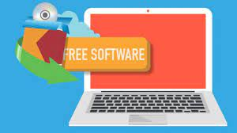

¿Windows o Linux? todos nos hemos hecho esta pregunta alguna vez, y es que elegir un sistema operativo para una computadora no es tan sencillo… O al menos no lo era hace años atrás.
Ahora en la actualidad hay una variedad inmensa de sistemas operativos de escritorio y sus diferencias son cada vez menos, hasta el punto de que cada servicio online o programa instalable es compatible con Windows, MacOS y Linux. Muchas firmas de software crean aplicaciones para las tres plataformas principales, son pocas las que solo crean programas para una en específico.
Pero tenemos todavía la misma duda que al principio ¿Deberíamos pasarnos a Linux? o ¿Deberíamos conformarnos con el viejo y confiable Windows? Hay razones a favor y en contra para todos los SO, y a continuación te presentamos los motivos por los que usar Linux hoy en día es una sabia elección. Por las siguientes razones.
1.Es gratis.
Windows es gratis durante un año en su última actualización, sin embargo, pasara a convertirse en un servicio por el que tendremos que pagar, macOS también es gratuito, pero este software está pensado para funcionar solamente en ordenadores Apple.
La gratuidad de Linux en su mayoría de distribuciones es uno de los motivos más relevantes para decantarte por este sistema operativo. Puedes descargar las distribuciones que quieras desde sus páginas oficiales e instalarlas las veces que quieras y en el número de computadoras que necesites, esto sin ningún costo alguno.
2.Fácil de usar.
Durante años una de las cosas que ha hecho que muchos usuarios decidan pasar de Linux es “su complejidad”, pues te informamos que en la actualidad ya no es necesaria la línea de comandos (o consola) para realizar las tareas.
Distribuciones de Linux como Ubuntu, Linux Mint, Debian o Manjaro ofrecen una interfaz muy similar a la de Window. Elementary y DeepIn ofrecen interfaces más similares al sistema operativo MacOS. Estas distribuciones vienen con todas las aplicaciones y herramientas que necesitas para usar tu computadora como siempre la has utilizado.
Tampoco es necesario recurrir a la consola para instalar una nueva app, la mayoría de distros tienen su propia tienda de aplicaciones o gestor de apps, todo está pensado para que cualquiera con una computadora pueda usar el software sin ningún problema.
3.Variedad de versiones
Podemos elegir una versión de Linux en función de lo que necesitemos ¿Para educación? ¿Para niños? ¿Para uso doméstico? ¿Para gestión de redes? ¿Para temas de seguridad? ¿Para reciclar un PC antiguo? La naturaleza de Linux y su filosofía de código abierto y libre hacen posible que contemos con decenas de versiones diferentes.
4.Totalmente personalizable
Nuestra única limitación a la hora de usar Linux es el conocimiento que tengamos para hacer lo que queremos hacer, aunque siempre podemos encontrar en internet un tutorial donde nos explique cómo hacerlo.
Linux cuenta con diferentes escritorios y gestores de ventanas, de manera que podemos escoger el que queramos, casi todas las distribuciones de Linux permiten esto, mientras que en Windows contamos con un escritorio por defecto, en Linux podemos elegir GNOME, KDE, Mate, Cinnamon, LXDE, XFCE.
Cualquier configuración o elementos del sistema operativo puede ser alterado, podemos elegir también que paquetes o programas bases queremos conservar, cosa que en Windows es imposible. Por ejemplo: Si en Windows no nos gusta el bloc de notas, nos limitamos solo a obviarlo, en Linux cualquier programa preinstalado puede ser eliminado o sustituido por aquel que consideremos.
Gracias a esto, podremos tener un sistema Linux dedicado en la totalidad de sus recursos a ejecutar juegos, al diseño gráfico, a la edición de audio, etc.
5.Compatibilidad
Suele pasar que cuando actualizamos, por ejemplo, de Windows XP a Windows 7 pierde la compatibilidad de algún dispositivo (webcam, micrófono, tarjeta de sonido, etc), también la cantidad de recursos que se exigen al equipo, por lo que el hardware debe cambiarse con cierta regularidad.
Linux nos ahorra todo esto, gracias a sus escasas exigencias como su amplia compatibilidad con periféricos “antiguos” hacen que prácticamente podamos trabajar con un equipo de los 90.
Para finalizar es necesario que sepas que cambiar de sistema operativo, es algo que podemos hacer con relativa facilidad, pero antes de dar este paso debemos tener varias cosas en mente. Más que nada para evitar frustrarnos los primeros días o encontrarnos con problemas que nos obliguen a dar marcha atrás, perdiendo así el doble de tiempo.
Por eso es que se recomienda que si se está considerando migrar a Linux, se investiguen ciertas cosas, como podrían ser:
- Que tu computadora sea compatible con la distro a instalar (la mayoría de incompatibilidades ocurren con equipos viejos).
- Se recomienda buscar los posibles reemplazos a los programas de licencia comercial que usas, por ejemplo: Photoshop, que no está disponible en Linux.
- Qué distribución Linux deberías instalar y cual se adapta más a tus necesidades.
Si ya tienes todas estas respuestas y consideras que no tendrás problemas al pasarte a Linux ¿Qué esperas para probarlo?